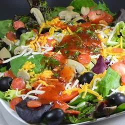

Pizza Salad

Try this pizza salad if you love the taste of pizza but don't want the calories of a deep-dish crust.
Ingredients
- 1 head iceberg lettuce, torn into bite-sized pieces
- ½ pound salami, cut into strips
- 1 cup shredded mozzarella cheese
- 1 cup shredded Cheddar cheese
- 1 tomato, chopped
- ½ cup pitted black olives, halved
- 1 tablespoon chopped fresh chives
Dressing:
- 1 (8 ounce) can tomato sauce
- ½ cup vegetable oil
- ¼ cup white wine vinegar
- 1 teaspoon white sugar
- 1 teaspoon dried oregano
- 1 teaspoon salt
- ¼ teaspoon garlic powder
- ⅛ teaspoon ground black pepper
Directions
- Combine lettuce, salami, mozzarella cheese, Cheddar cheese, tomato, olives, and chives in a large bowl. Mix well to combine.
- Make dressing: Whisk together tomato sauce, oil, vinegar, sugar, oregano, salt, garlic powder, and pepper in a medium bowl.
- Pour enough dressing over lettuce mixture to coat; toss and serve.